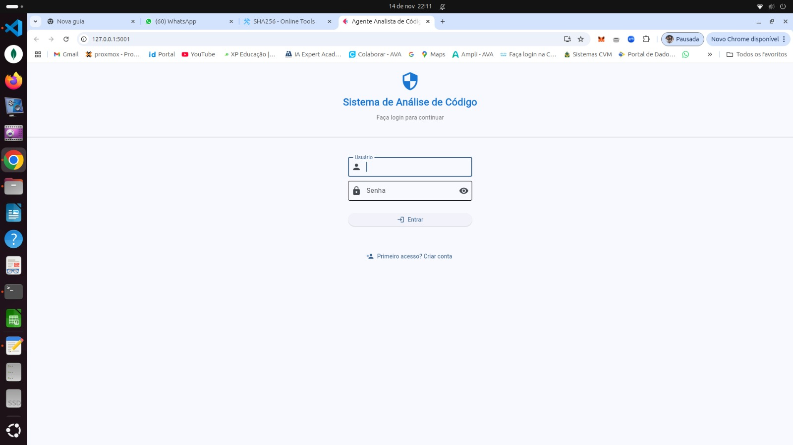
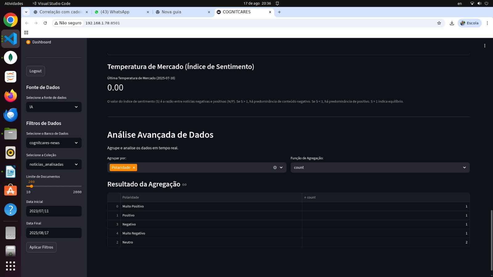
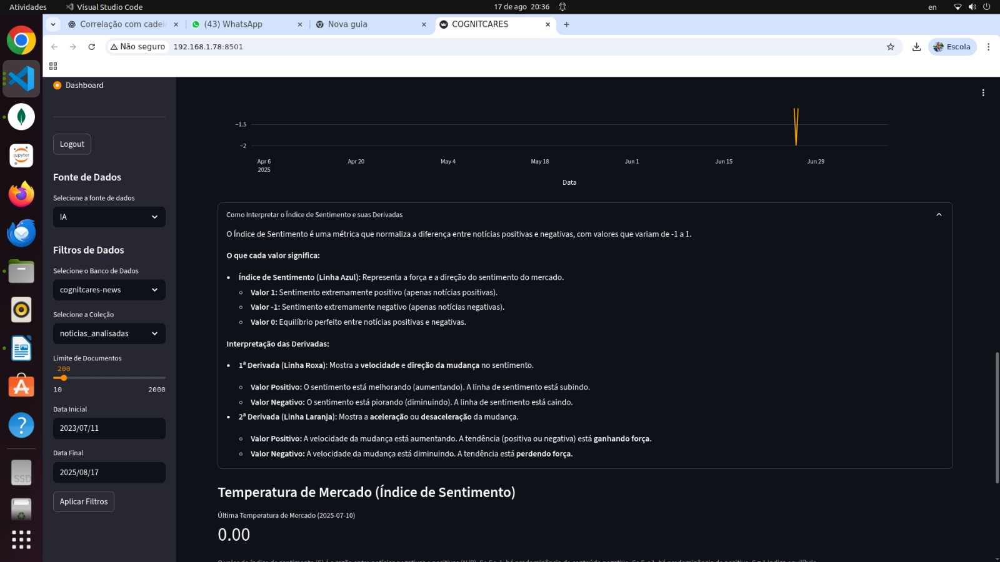
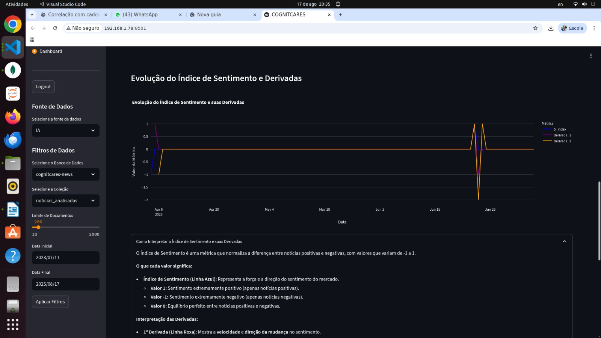
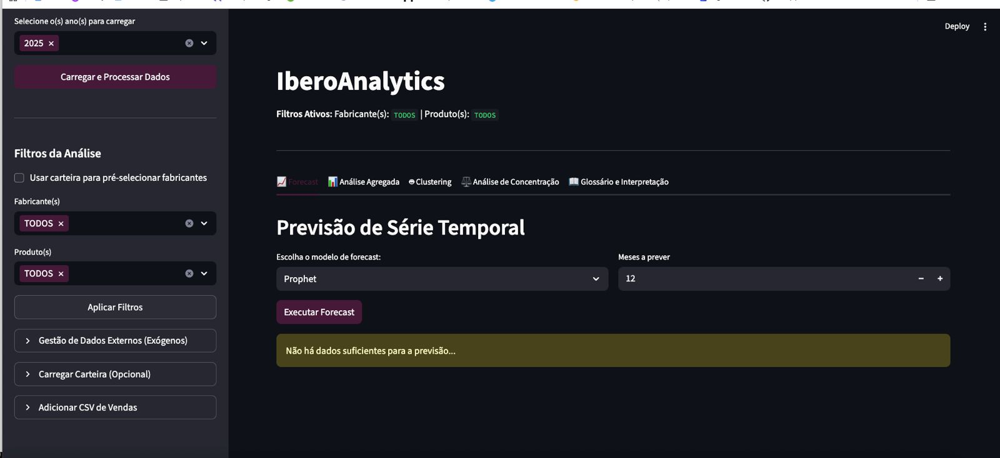
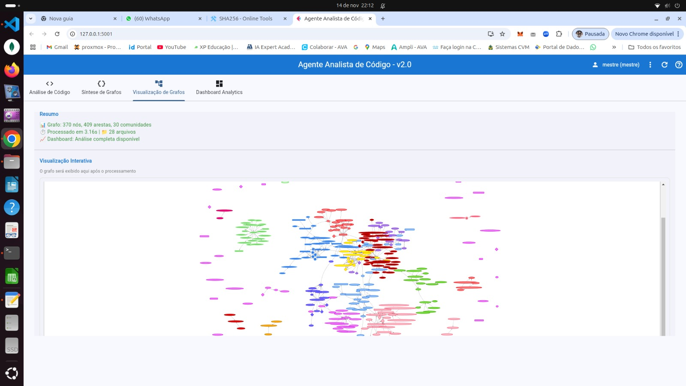
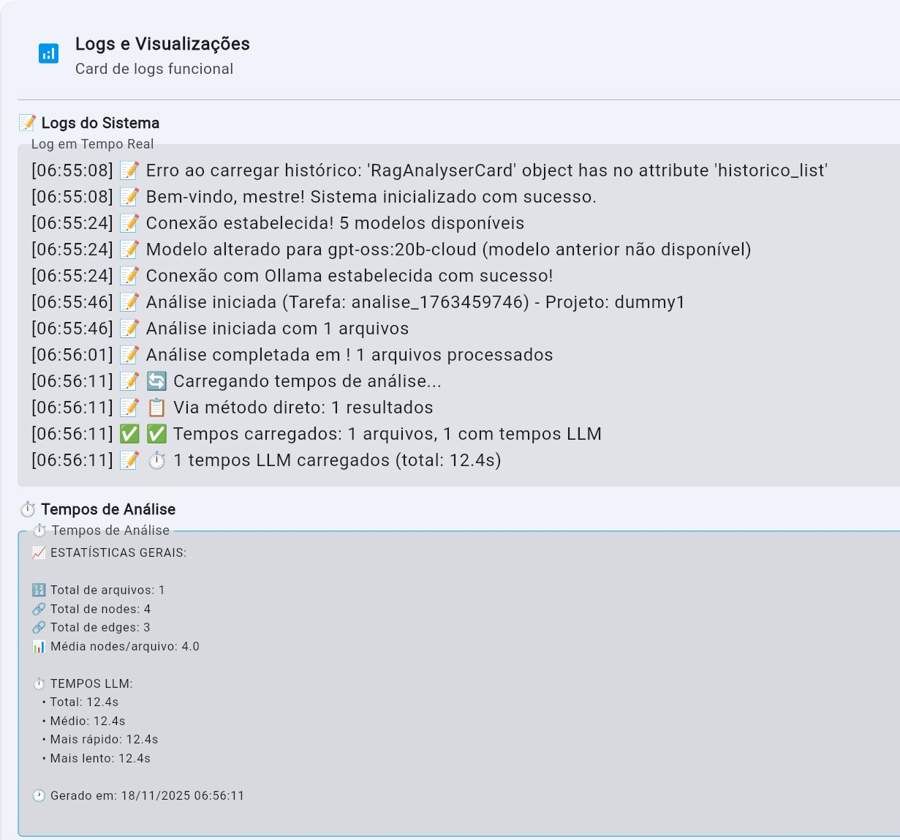
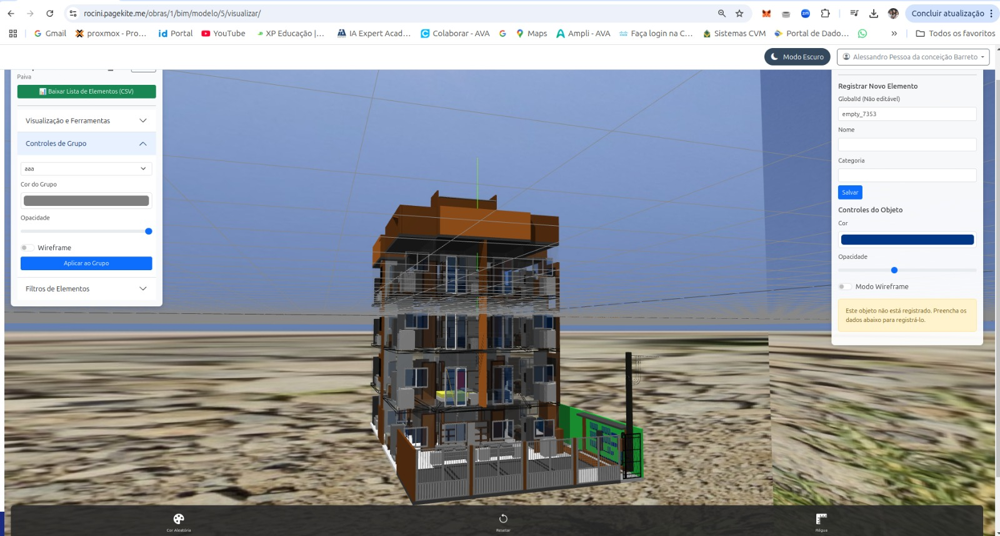

Cientista de Dados · Engenheiro de IA · Pesquisador
Transformo dados em
inteligência acionável
Soluções ponta a ponta — da arquitetura de dados ao deploy de modelos em produção — com rigor científico, boas práticas de engenharia e foco na geração de valor real para o negócio.
Perfil Profissional
Quem sou eu
Uma trajetória construída na intersecção entre engenharia industrial, forças armadas e ciência de dados — onde disciplina, rigor técnico e visão sistêmica se tornam diferenciais concretos.

Alessandro Pessoa
Data Scientist & AI Engineer · Mestrando UFF · Marinha do BrasilCom mais de 6 anos de especialização em Ciência de Dados e Inteligência Artificial, atuo na construção de soluções analíticas de ponta a ponta — desde a ingestão e governança de dados até o deploy de modelos em produção e sistemas multiagente com LLMs. Meu diferencial está em unir fundamentos teóricos sólidos (atualmente em fase final do Mestrado em Computação na UFF, com foco em NLP e Modelagem Neural) com uma visão pragmática orientada à entrega de valor mensurável.
Minha base técnica foi forjada ao longo de mais de 15 anos em ambientes de missão crítica: automação industrial em plantas de petróleo, programação de CLPs Siemens, projetos de instrumentação Foundation Fieldbus e, a partir de 2013, como Sargento Especialista no programa de submarinos nucleares da Marinha do Brasil. Essa trajetória desenvolveu em mim a disciplina para trabalhar com sistemas de alta confiabilidade e a capacidade de comunicar soluções técnicas complexas para diferentes audiências.
Atualmente, como Cientista de Dados no CASNAV (Centro de Análises de Sistemas Navais), contribuo diretamente para o Projeto DELFOS — Sistema de Apoio à Decisão estratégico do Ministério da Defesa —, desenvolvendo ferramentas de simulação, pipelines de dados e protótipos de IA aplicados à tomada de decisão em cenários operacionais.
Linha do Tempo
Uma trajetória de convergências
Da automação industrial à inteligência artificial — cada etapa foi fundamento para a seguinte, construindo uma visão integrada de sistemas, dados e decisão.
2008 – 2012
Os Alicerces: Redes, Automação Industrial & Primeiros Projetos
Tudo começou no SESI, com cursos de redes e manutenção de computadores que me possibilitaram gerar renda ainda na adolescência — formatando máquinas e construindo pequenas redes locais para empresas da região. Em 2009, ingressei no curso técnico de Automação e Controle Industrial no SENAI-CETIND (Bahia), de onde saí diretamente para o mercado: programação de CLPs Siemens S7, projetos de instrumentação Foundation Fieldbus e instrumentação industrial (pressão, nível, vazão, temperatura, elementos finais de controle) na PetroReconcavo, View Engenharia e Alstom Power. Essa experiência me ensinou que sistemas confiáveis são construídos com rigor, redundância e atenção obsessiva ao detalhe.
2013 – 2018
Marinha do Brasil: Missão Crítica, IoT e Engenharia de Software
Após aprovação em concurso público, ingressei na Marinha do Brasil como Sargento Especialista em Automação Industrial, integrando o programa de submarinos nucleares — um dos projetos de engenharia mais exigentes do país. Em 2015, por necessidade de serviço, iniciei formação em engenharia de software com ênfase em sistemas web (interfaces CRUD para dispositivos industriais e IoT), o que abriu um novo horizonte. Desenvolvi sistemas integrados com transmissores, atuadores e sensores industriais, e paralelamente comecei a entregar soluções web para pequenas e médias empresas — aprendendo, na prática, a construir software desde o requisito até a implantação.
2019 – 2023
A Migração para Dados: Graduação, Pipelines e Modelos em Produção
Em 2019, tomei uma decisão deliberada: migrar da engenharia de software para a Ciência de Dados. Concluí a graduação em Ciência de Dados (Anhanguera, 2021–2023) enquanto construía, em paralelo, projetos reais com valor mensurável. Aprendi, nos primeiros anos, que o maior desafio não é o modelo — é o dado: qualidade, governança, versionamento e rastreabilidade. Passei a adotar práticas de MLOps (MLflow, DVC, Docker) e a estruturar experimentos com grupo de controle, dados censurados, testes de hipótese e validação cruzada rigorosa.
2023 – 2025
MBA, LLMs e Pesquisa Aplicada em Defesa Nacional
O MBA em Ciência de Dados e ML (XP Educação, 2023–2024) aprofundou minha visão de MLOps, fine-tuning e RAG. Paralelamente, na Marinha, iniciei pesquisa aplicada com LLMs para análise do ambiente informacional, contribuindo para operações de informação e defesa cibernética. O artigo "IA como Tecnologia para Guerras Híbridas" conquistou o 1º lugar no Simpósio de Gestão do Conhecimento da MB 2024, demonstrando a aplicabilidade de modelos de linguagem em cenários estratégicos reais. Nesse período, também desenvolvi ferramentas com sistemas multiagente e pipelines de análise de séries temporais para o setor privado.
2024 – Presente
Mestrado em Computação (UFF) & CASNAV: Onde Ciência e Defesa se Encontram
Atualmente em fase final do Mestrado em Computação na UFF, com linha de pesquisa em Modelagem Neural e Processamento de Linguagem Natural. No CASNAV, atuo como Cientista de Dados no Projeto DELFOS — SAD estratégico para o Ministério da Defesa —,pipelines de dados e protótipos de IA para cenários operacionais.
Stack Técnico
Competências & Ferramentas
Profundidade técnica construída em projetos reais — não apenas em cursos. Cada percentual reflete uso efetivo em produção ou em pesquisa aplicada.
// Hard Skills
// Soft Skills
Abordagem de Trabalho
Como eu construo soluções
Rigor científico e boas práticas de engenharia de software aplicados à Ciência de Dados. Não basta que o modelo funcione — ele precisa ser rastreável, reprodutível, explicável e alinhado ao problema de negócio.
Experimentação Controlada
Experimentos quase-experimentais com grupos de controle, dados censurados (esquerda/direita), testes estatísticos formais (hipótese, poder, significância) e documentação de cada decisão. Métricas múltiplas, não apenas acurácia.
MLOps & Engenharia de Dados
Versionamento de dados (DVC), modelos (MLflow) e código (Git). Pipelines reprodutíveis com Kedro, containerização com Docker e CI/CD para garantir que o que funciona em desenvolvimento funciona em produção.
Metodologias Estruturadas
Design Science Research (DSR), GQM para definição de métricas, DAMA DMBOK para governança de dados, Scrum para gestão ágil e Clean Architecture como base para sistemas sustentáveis.
Análise Profunda de Modelos
Grid Search, Random Search e Bayesian Optimization para hiperparâmetros. Análise de vieses no modelo, nos dados e nas métricas. Técnicas de redução de dimensionalidade (PCA, LDA, UMAP) e explicabilidade (SHAP, LIME).
Desenvolvimento Ponta a Ponta
Capacidade de construir desde o ERP (Django + Docker + REST) até o serving do modelo de IA, passando por pipelines ETL, data lakes (MongoDB conteinerizado) e interfaces de usuário (Streamlit, Flet). Um generalista técnico de alto desempenho.
Alinhamento com o Negócio
Início sempre pelo problema, não pela solução técnica. Uso de dashboards e KPIs customizados (como a "Temperatura de Mercado" — um indicador sintético proprietário) para conectar a análise estatística à decisão executiva.
Trabalhos Recentes
Projetos em Destaque
Soluções que combinam engenharia robusta, inteligência artificial e impacto real — do setor público à indústria privada.

// Projeto 01 · Defesa Nacional
Projeto DELFOS — Sistema de Apoio à Decisão Estratégico
DELFOS é um Sistema de Apoio à Decisão (SAD) estratégico e gerencial desenvolvido para o Ministério da Defesa. Trata-se de uma plataforma integrada que combina múltiplas camadas de inteligência de dados para suportar decisões de alto impacto.
No componente de dados, atuo diretamente na implementação e protopipação de:
- Conformidade LGPD: Pipelines com governança e anonimização de dados sensíveis, incluindo arquitetura para machine unlearning (direito ao esquecimento).
- IA para Análise de Código Legado: Módulo que utiliza LLMs para compreender sistemas antigos sem documentação, gerando grafos de dependência e identificando pontos críticos de manutenção.
- Dashboards MVP com Streamlit: Interfaces rápidas para validação de hipóteses e visualização de indicadores gerenciais.
- Machine Learning para os modulos de negocio: Modelos preditivos para validação de dados, identificação de padrões anômalos e detecção de fraudes em benefícios de aposentadoria e pensões — um dos componentes mais sensíveis do sistema.
O projeto segue metodologias estruturadas (DSR, GQM) e boas práticas de MLOps, garantindo rastreabilidade e reprodutibilidade em um ambiente de missão crítica.

// Projeto 02 · Simulação Física
Simulador de Paraquedas (Projeto Independente)
Ferramenta interativa desenvolvida originalmente em outra divisão, que simula trajetórias de paraquedas com base em parâmetros ambientais (vento, densidade do ar) e de carga.
A integração de equações de movimento com resolução numérica iterativa demonstra a aplicação prática de conceitos de física e matemática computacional em interfaces intuitivas. O projeto foi apresentado por mim no Rio Innovation Week 2025 como demonstração de capacidade técnica em simulação e desenvolvimento multiplataforma. Não participei da equipe de desenvolvimento da aplicação, mas requisitado como facilitador apresentando o projeto para o publico do evento, respondendo perguntas técnicas e destacando os desafios de modelagem e implementação do meu antigo setor (Simulação do CASNAV).




// Projeto 03 · Inteligência de Mercado
Sistema de Análise de Mercado com Temperatura de Informação
Inspirado em pesquisa própria sobre análise do ambiente informacional em cenários de guerras híbridas, este sistema foi adaptado para o mercado de implementos rodoviários. Monitora notícias em tempo real via web scraping parametrizado, armazena os dados em data lake MongoDB conteinerizado e aplica análise de sentimento para quantificar o impacto informacional no setor.
O diferencial técnico é a "Temperatura de Mercado" — um KPI sintético proprietário construído a partir de derivadas e gradientes matemáticos sobre séries históricas combinadas com sinais de sentimento de notícias. O indicador detecta força, direção e aceleração de tendências, gerando alertas automáticos para tomadores de decisão. O sistema também inclui curadoria humana habilitada por agente de IA, permitindo que analistas refinem os dados capturados pelo scraping.

// Projeto 04 · Forecasting
Previsão de Demanda — Implementos Rodoviários
Sistema de forecasting multivariado desenvolvido para empresa de consultoria no setor de implementos rodoviários. Combina quatro abordagens de séries temporais (Prophet, ARIMA, SARIMA, SARIMAX) com modelos baseados em Random Forest, permitindo comparação sistemática de acurácia entre metodologias.
O diferencial é a ingestão de variáveis exógenas relevantes para o setor: a taxa de juros Selic (impacta diretamente o financiamento de frotas) e um índice de sentimento de notícias do segmento, construído com técnicas de NLP. Essa abordagem multimodal melhora substancialmente a acurácia preditiva em horizontes de médio prazo, especialmente em períodos de volatilidade macroeconômica.


// Projeto 05 · Engenharia de Software com IA
CoDe2CGA — Análise Inteligente de Código Fonte
Agente de análise de código que combina análise sintática abstrata (AST) com LLMs para gerar grafos de chamada (call graphs), identificar dependências críticas entre classes e métodos, calcular métricas de complexidade ciclomática e sugerir oportunidades de refatoração com base em padrões de design.
O sistema suporta seleção dinâmica do modelo de IA, customização de prompts, filtragem de arquivos específicos, análise de tempo de processamento (correlacionada com complexidade) e conversas contextuais sobre o código — criando uma experiência de "pair programming" com IA focada em qualidade estrutural. Frontend multiplataforma construído com Flet (iOS, Android, Desktop, Web).

// Projeto 06 · ERP + Multiagente
ERP para Gestão de Obras com Sistema Multiagente
ERP completo para o setor de construção civil, desenvolvido com Django conteinerizado em Docker. Inclui módulos de cronograma físico-financeiro, gráfico de Gantt, Curva S, quadro Kanban e dashboards de acompanhamento de obra. A arquitetura desacopla o ERP (Django) de um serviço de multiagentes via REST API, possibilitando a geração automatizada de cronogramas através de colaboração entre agentes especializados.
O sistema multiagente, ainda em aperfeiçoamento de seu contexto MCP (Model Context Protocol), já demonstra capacidade de gerar cronogramas coerentes para obras de pequeno porte, com potencial de expansão para projetos complexos com restrições de recursos e dependências entre tarefas.

// Projeto 07 · ML & Compliance LGPD
Desaprendizado de Máquina com Conformidade LGPD
Implementação de machine unlearning que garante o "direito ao esquecimento" previsto na LGPD sem a necessidade de re-treinamento completo do modelo. O pipeline utiliza BERT para extração de features e geração de embeddings ricos, que alimentam um classificador Random Forest estruturado com a metodologia SISA (Sharded, Isolated, Sliced, Aggregated).
A arquitetura em shards isolados permite remover os dados de um indivíduo com re-treinamento apenas do shard afetado — reduzindo dramaticamente o custo computacional e o risco de exposição a passivos jurídicos decorrentes de descumprimento da LGPD. Trabalho publicado no ResearchGate e com aplicabilidade direta em sistemas de crédito, saúde e RH.
Demonstração
Demonstração ERP que esta em desenvovilmento (2026) Multiagente para gerenciamento de Obras com modelos BIM (IFC e GLB)
Assista ao video que mostra a aplicação em funcinamento, renderizando modelo BIM de uma obra real e funcionalidades
Demonstração do Agente Conversacional ROCINI IA
Demonstração ROCINI IA
Em omenagem ao financiadoro nome do sistema multiagente é ROCINI IA e consome repositorios e datalakehouse da aplicação Obras Service (ERP de gestão de Obras)
Currículo
Trajetória Acadêmica & Profissional
Uma combinação incomum: fundamentos técnicos forjados em automação industrial, disciplina de missão crítica das forças armadas e especialização contínua em IA e dados.
Formação Acadêmica
Mestrado em Computação
2024 – 2026 (previsto)
Universidade Federal Fluminense (UFF)Linha de pesquisa: Modelagem Neural e Processamento de Linguagem Natural. Desenvolvimento de soluções com LLMs para análise de ambientes informacionais complexos, operações de informação e suporte à decisão em contextos de segurança nacional.
MBA em Ciência de Dados e Machine Learning
2023 – 2024
XP EducaçãoProjeto de conclusão: sistema de análise do ambiente informacional com modelos neurais aplicados à defesa nacional. Aprofundamento em MLOps, arquiteturas de LLMs e engenharia de features.
Graduação em Ciência de Dados
2021 – 2023
Universidade AnhangueraTécnico em Automação e Controle Industrial
2009 – 2011
SENAI-CETIND (Bahia)Formação técnica com ênfase em CLPs, instrumentação industrial, automação de processos e sistemas de controle de malha fechada. Base que fundamentou toda a trajetória seguinte.
Experiência Profissional
Cientista de Dados — CASNAV
2025 – Presente
Marinha do Brasil — Centro de Análises de Sistemas NavaisAtuação no Projeto DELFOS, SAD estratégico do Ministério da Defesa. Construção de pipelines de dados, experimentação com modelos de IA, desenvolvimento de módulos de conformidade LGPD e análise de código legado com IA. Saiba mais.
Marinha do Brasil — CoNavOpEsp
2024 – 2025
2º Sargento — Especialista em IA para Operações de InformaçãoPesquisa e implementação de LLMs para análise do ambiente informacional. Produção científica premiada (1º lugar — Simpósio de Gestão do Conhecimento MB 2024) e convite para publicação na Revista Vitória nas Sombras.
Marinha do Brasil — Programa de Submarinos Nucleares
2013 – 2024
Especialista em Automação IndustrialManutenção e operação de sistemas de controle de missão crítica. A partir de 2015, desenvolvimento de sistemas web para IoT industrial e integração de dispositivos de campo com interfaces de supervisão e controle.
Alstom Power / View Engenharia / PetroReconcavo
2011 – 2013
Técnico em Automação e Instrumentação (Pleno)Programação de CLPs Siemens S7-300/400, projetos de instrumentação Foundation Fieldbus, manutenção de sistemas de automação em plataformas e refinarias de petróleo na Bahia.
Portfólio
Projetos, Publicações e Conquistas
Destaques da atuação em pesquisa aplicada, desenvolvimento de soluções e reconhecimentos institucionais.
- Todos
- Projetos
- Publicações
- Conquistas


{kind=link}
{kind=link}
{kind=link}
{kind=link}
{kind=link}
{kind=link}
{kind=link}
{kind=link}
{kind=link}
{kind=link}
{kind=link}
O que ofereço
Serviços & Consultoria
Disponível para projetos freelance, consultorias pontuais e engajamentos de longo prazo. Foco em gerar impacto mensurável, não em entregar modelos que ficam na gaveta.
Modelagem Preditiva & Explicativa
Construção de modelos com rigor estatístico — validação cruzada, análise de viés, métricas adequadas ao problema de negócio e explicabilidade com SHAP/LIME para suporte real à decisão.
LLMs, RAG & Sistemas Multiagente
Assistentes inteligentes corporativos, sistemas de Q&A sobre bases de conhecimento proprietárias, pipelines de RAG e arquiteturas multiagente com MCP para automação de tarefas complexas.
Arquitetura de Dados & MLOps
Pipelines ETL/ELT, data lakes, versionamento de dados e modelos (DVC/MLflow), containerização com Docker e estratégias de deploy para modelos em produção.
Dashboards & KPIs Customizados
Painéis interativos com Streamlit, Power BI ou soluções web. Criação de indicadores sintéticos e alertas automáticos — como a "Temperatura de Mercado" — que conectam dados à decisão executiva.
Conformidade LGPD em IA
Implementação de machine unlearning (metodologia SISA) para garantir o direito ao esquecimento sem re-treinamento completo, reduzindo custos e risco de passivos jurídicos.
Sistemas Ponta a Ponta
Desenvolvimento completo: do ERP (Django + Docker) ao serving do modelo de IA. Para empresas que ainda não têm cultura de dados e precisam construir a infraestrutura do zero.
Reconhecimento
O que dizem sobre o trabalho
Que coisa incrível isso. Adorei essa ideia — a forma como você combina técnica e praticidade é inspiradora.

Marcele A.
CEO & Founder — Treinamento de TI
Cara, você já me ajudou muito. De verdade. Sua forma de explicar coisas complexas de maneira simples é rara.

Thiago
Mestrando — UFF
Parabenizamos por ter se classificado em 1º lugar com o artigo "IA como Tecnologia para Guerras Híbridas" no Simpósio de Gestão do Conhecimento 2024.

Marinha do Brasil
Diretoria de Pessoal — MB
Vamos Conversar
Entre em Contato
Aberto a projetos desafiadores, parcerias de pesquisa e consultoria especializada. Se o problema envolve dados, inteligência artificial ou engenharia de software, posso contribuir.
Localização
Rio de Janeiro, Brasil
+55 21 96545-6006
alessandro-pessoa@hotmail.com